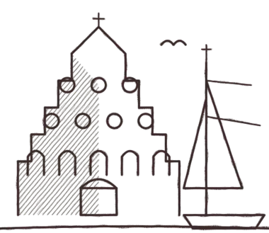
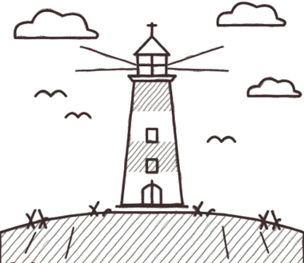
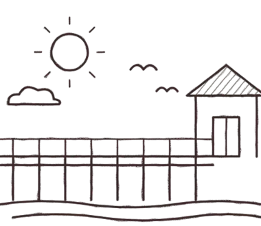
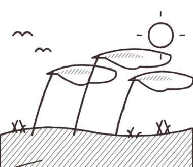

Hochzeitsfotograf in Mecklenburg-Vorpommern
Bride & Light begleitet Hochzeiten mit Fotografie und Brautstyling auf Rügen, in Stralsund und in ganz Mecklenburg-Vorpommern. Hier findet ihr Orte, Fotospots und Tipps für eure Region.
Eure Region, euer Ort
Wählt unten den Ort, an dem ihr heiratet. Zu jeder Region haben wir Orte, Lichtstimmungen und Hinweise zusammengestellt, die bei der Planung eurer Hochzeitsfotos helfen. Fragt Verfügbarkeit und Anfahrt einfach unverbindlich an.

Hochzeitsfotograf Stralsund
Altstadt, Hafen und Backsteingiebel als Kulisse für Hochzeitsfotos.

Hochzeitsfotograf Rügen
Kreideküste, Kap Arkona, Seebrücken und Strände auf Deutschlands größter Insel.

Hochzeitsfotograf Usedom
Kaiserbäder, Seebrücken, Strand und Haff auf Usedom.

Hochzeitsfotograf Darß & Zingst
Darßer Wald, Weststrand, Bodden und Reetdachhäuser.
Hochzeitsfotograf Greifswald
Marktplatz, Museumshafen, Eldena und Wieck als Fotokulisse.
Hochzeitsfotograf Rostock
Warnemünde, Stadthafen und Altstadt: Orte für Hochzeitsfotos in Rostock.
Hochzeitsfotos in Mecklenburg-Vorpommern anfragen
Schreibt uns Datum, Ort und eure Wünsche. Wir melden uns persönlich bei euch, unverbindlich.
Weiter planen: Goldene Stunde berechnen · Fotostunden-Rechner · Hochzeitsfotograf finden